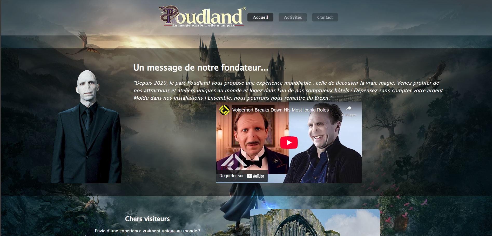

Projet HTML & CSS
>Lien github vers le projet<
Projet d'IUT réalisé en Binôme de création d’un site web statique, uniquement à l’aide de HTML et CSS. Le thème était libre, à condition d’imaginer un lieu de divertissement original, crédible et cohérent. Nous avons conçu l’ensemble du site, de la structure des pages jusqu’à l’habillage visuel, sans maquette imposée.
Le site comporte plusieurs pages : une page d’accueil présentant le concept et intégrant une vidéo externe, une page listant les activités proposées avec une mise en page en grille responsive, et une page de contact incluant un formulaire de réservation et une carte interactive. Chaque membre était responsable d’une page en particulier, tout en veillant à une identité visuelle homogène sur l’ensemble du site, avec un logo, une charte graphique (couleurs, polices) et une navigation fluide. Nous avons aussi respecté des contraintes techniques précises : validation W3C, gestion des polices avec @font-face, adaptabilité entre 350px et 1600px, etc.
Ce projet m’a permis de consolider mes compétences en intégration web, en design responsive, et en organisation rigoureuse du code (fichiers CSS modulaires, nomenclature claire, absence de code mort). Il m’a aussi sensibilisé à la cohérence graphique et à l’expérience utilisateur, même dans un environnement purement statique.